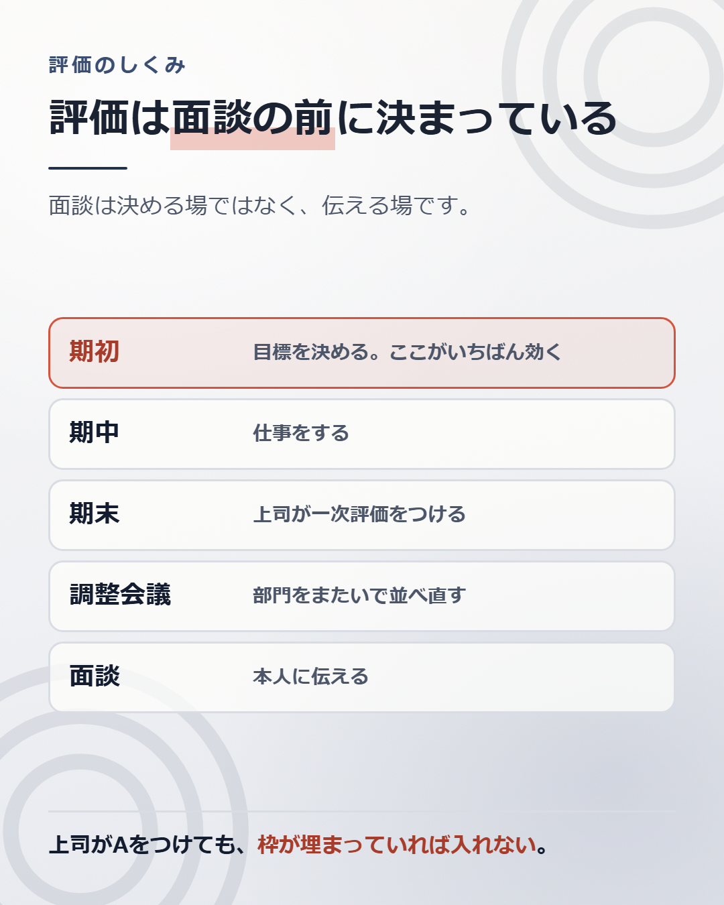

評価面談で挽回できることは、ほとんどありません。
面談の席で成果を並べても、評価が書き換わることは、まずありません。面談が始まる時点で、評価はもう決まっているからです。
面談は、決める場ではありません。伝える場です。

多くの会社で、評価は次の順で決まります。
書き換わる余地があるのは、面談の前までです。
いちばん見えないのが、ここです。
上司がAをつけても、そのまま確定するとはかぎりません。部門をまたいで並べ直す会議があります。
理由は、上司ごとに甘さが違うからです。甘い上司の部下ばかりが上位になると、制度が成り立ちません。だから、別の部署の同じ等級の人と並べて、順番を整えます。
このとき効いてくるのが、分布の枠です。
多くの会社は、評価ごとの人数に上限を決めています。S評価は何%まで、A評価は何%まで、という形です。
枠が埋まっていれば、良い仕事をしていてもAには入りません。 上司が押しても、他の部署の誰かを下げないと入れられません。
分布の枠があるかどうかは、規程を読めば分かることがあります。評価の結果を賃金にどう反映するかは、就業規則（賃金規程）に書いて届け出るものだからです（労働基準法89条2号）。そして会社には、書いたものを働く人に周知させる義務があります（労働基準法106条1項）。
評価そのものは会社の裁量です。ただし裁量は無制限ではありません。労働契約法3条5項が、契約上の権利を濫用してはならないと定めています。 裁量を濫用した評価は、裁判で無効とされることがあります。
「上司はすごく評価してくれているのに、結果はBだった」が起こる理由です。上司が嘘をついたわけではありません。上司の一次評価は、本当にAだったことがあります。
評価を動かしたいなら、見る場所は期末ではありません。期初です。
目標設定シートに書いた内容が、期末に何で測られるかを決めています。
たとえば「業務効率化を進める」とだけ書いた人は、期末に何をもって達成とするか、上司と解釈がずれます。ずれたときは、たいてい低いほうに寄ります。
「月次の締めを5営業日から3営業日にする」と書いた人は、できたかできなかったかで終わります。解釈の余地がありません。
測り方が決まっていない目標は、期末に値切られます。
期初のシートは、たいてい10分で埋めて提出されます。その10分が、1年分の評価を決めています。
面談で評価は変わりませんが、意味がないわけではありません。
聞くべきことが2つあります。
ひとつは、次の評価で何を見るか。 期初の目標を、その場で具体的にしていきます。
もうひとつは、昇格の要件をどこまで満たしているか。 記事1と記事4で書いたとおり、基本給を大きく動かすのは等級です。評価そのものより、等級が上がる見込みがあるかのほうが、金額に効きます。
「次の等級に上がるために、あと何が足りませんか」と聞いてください。答えが具体的なら、道があります。答えが曖昧なら、空きが無い可能性があります。
期初に出した目標設定シートを開いてください。
1つずつ見て、「達成したかどうかを、誰が見ても同じように判定できるか」を確かめます。
判定できない書き方のものがあれば、そこが値切られる場所です。いまからでも、上司に確認して具体化できることがあります。
もうひとつ、評価に分布の枠があるかを聞いてください。 あるかどうかを聞くだけです。枠があると分かれば、自分の評価は自分の仕事だけで決まっていないと分かります。
聞く前に、賃金規程を探してください。書いてあることがあります。 会社には、就業規則を働く人に周知させる義務があります（労働基準法106条1項）。見当たらなければ、この条文が「見せてください」と言うときの足場になります。
目標の書き方を直せば、評価は上がります。等級が上がれば、基本給の段も変わります。
それでも、記事1で見たとおり、評価で動くのは年収で数万円から十数万円、等級で数十万円です。
いちばん大きく動くのは、市場です。 そして市場での自分の値段だけは、社内のどこを探しても書いてありません。
調べ方は、別の記事にまとめています。